模型判斷依據 — Grad-CAM 熱區
每張圖：左＝原圖與推出的佐證框，右＝熱區。紅框卡片＝判錯。
熱區是模型自己的依據，不是 Gemini 的猜測。
照片120
可比測試集 top-10.5 (n=4)
熱區落在遮罩角落7.2%
角落面積佔比（基準）14.4%
角落熱區 >30% 的照片1
佐證框平均面積19.1%
遮掉框後信心平均降幅0.25
遮掉框後答案翻掉44%
怎麼讀「熱區落在遮罩角落」：四個灰色角落合計佔畫面 14.4%，
本身沒有工項資訊。若這個數字明顯高於 14.4%，代表模型在拿遮罩邊界當捷徑猜答案，
分數再高也不可信。判對與判錯的照片分別是
0.0171 / 0.0793。
怎麼讀「遮掉框後」：把紅框塗成灰色再問一次同一個模型。信心大跌或答案翻掉，
代表這個框真的是它的依據；信心幾乎不動，代表那張熱圖只是裝飾、依據其實在別處。
這是驗證「解釋可不可信」，不是驗證「模型準不準」。
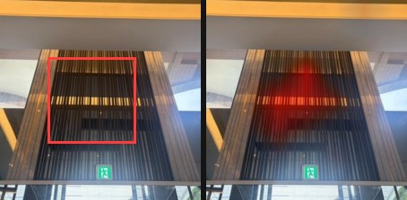
磁磚_牆 0.35 ／ 日報 雜項-清潔test · 遮掉框後信心 0.22 → 改答 泥作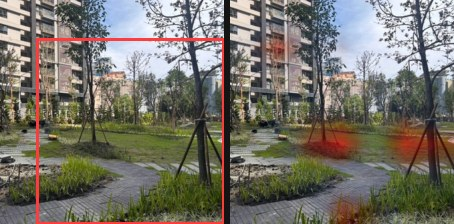
景觀 0.92 ／ 日報 植栽-景觀test · 遮掉框後信心 0.61 · 與 Gemini 框 IoU 0.25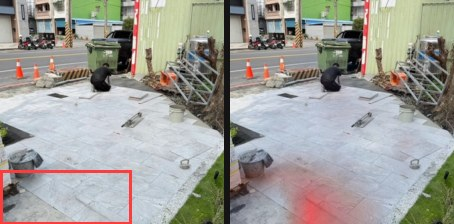
磁磚_地 0.41 ／ 日報 泥作-地磚貼飾test · 遮掉框後信心 0.18 → 改答 清潔 · 與 Gemini 框 IoU 0.11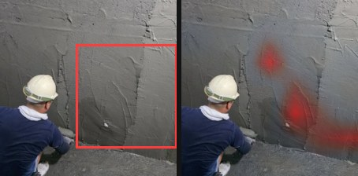
泥作 0.72 ／ 日報 泥作-打底粉光test · 遮掉框後信心 0.67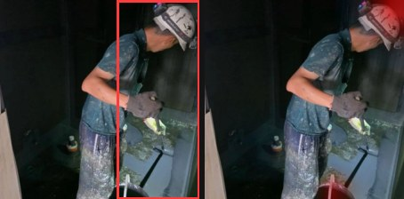
防水 0.44 ／ 日報 防水-防水施作test · 遮掉框後信心 0.04 → 改答 泥作 角落熱區 34%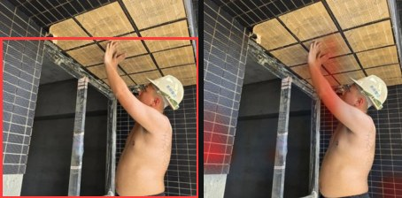
磁磚_牆 0.89 ／ 日報 泥作-壁磚貼飾test · 遮掉框後信心 0.11 → 改答 泥作 · 與 Gemini 框 IoU 0.62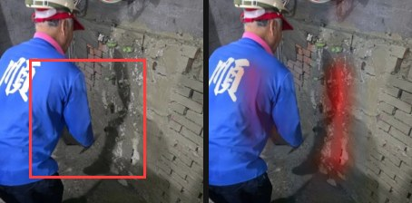
泥作 0.89 ／ 日報 泥作-打底粉光test · 遮掉框後信心 0.67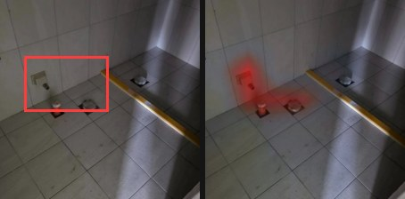
磁磚_地 0.92 ／ 日報 泥作-地磚貼飾test · 遮掉框後信心 0.85 · 與 Gemini 框 IoU 0.14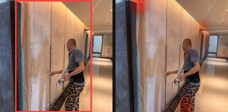
油漆批土 0.92 ／ 日報 油漆-批土塗裝test · 遮掉框後信心 0.41 → 改答 泥作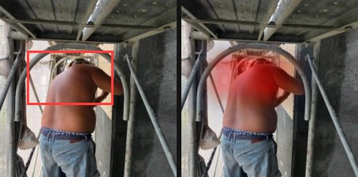
磁磚_牆 0.56 ／ 日報 泥作-壁磚貼飾test · 遮掉框後信心 0.06 → 改答 泥作 · 與 Gemini 框 IoU 0.85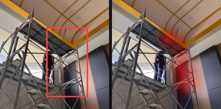
磁磚_牆 0.60 ／ 日報 雜項-清潔test · 遮掉框後信心 0.31 · 與 Gemini 框 IoU 0.09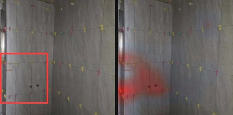
磁磚_牆 0.93 ／ 日報 泥作-壁磚貼飾test · 遮掉框後信心 0.83 · 與 Gemini 框 IoU 0.01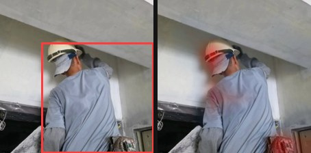
油漆批土 0.44 ／ 日報 油漆-批土塗裝test · 遮掉框後信心 0.09 → 改答 泥作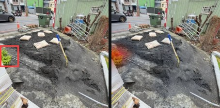
景觀 0.27 ／ 日報 泥作-地磚貼飾test · 遮掉框後信心 0.12 → 改答 磁磚_地 · 與 Gemini 框 IoU 0.09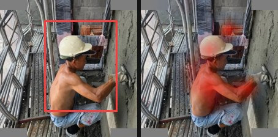
磁磚_牆 0.65 ／ 日報 泥作-打底粉光test · 遮掉框後信心 0.13 → 改答 泥作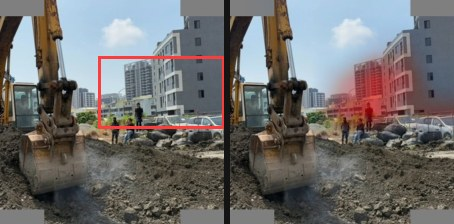
清潔 0.30 ／ 日報 雜項-清潔test · 遮掉框後信心 0.13 → 改答 基礎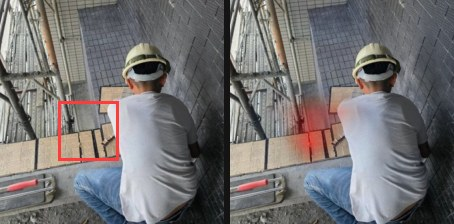
磁磚_牆 0.53 ／ 日報 泥作-壁磚貼飾test · 遮掉框後信心 0.32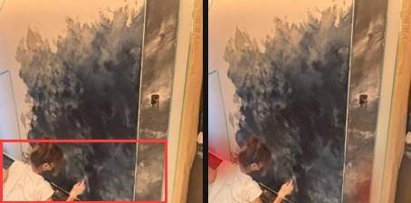
油漆批土 0.61 ／ 日報 油漆-批土塗裝test · 遮掉框後信心 0.36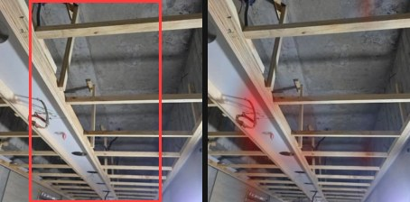
木作 0.87 ／ 日報 木作-天花封板test · 遮掉框後信心 0.60 · 與 Gemini 框 IoU 0.47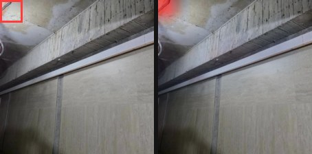
木作 0.78 ／ 日報 木作-天花封板test · 遮掉框後信心 0.69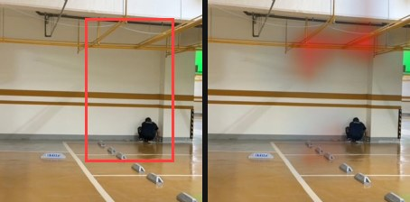
清潔 0.58 ／ 日報 油漆-批土塗裝test · 遮掉框後信心 0.46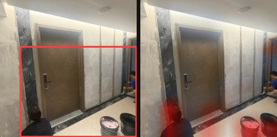
油漆批土 0.94 ／ 日報 油漆-批土塗裝test · 遮掉框後信心 0.34 → 改答 泥作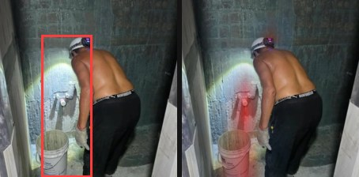
防水 0.56 ／ 日報 防水-防水施作test · 遮掉框後信心 0.03 → 改答 泥作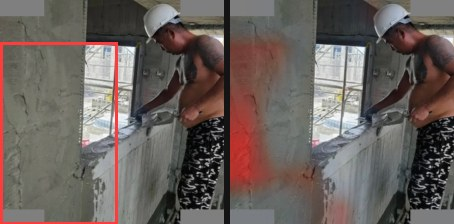
泥作 0.32 ／ 日報 泥作-打底粉光test · 遮掉框後信心 0.08 → 改答 油漆批土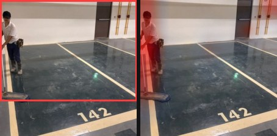
清潔 0.30 ／ 日報 雜項-清潔test · 遮掉框後信心 0.01 → 改答 泥作 · 與 Gemini 框 IoU 0.24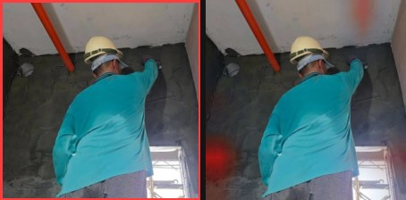
泥作 0.54 ／ 日報 泥作-打底粉光test · 遮掉框後信心 0.69 · 與 Gemini 框 IoU 0.36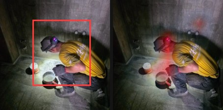
防水 0.81 ／ 日報 防水-防水施作test · 遮掉框後信心 0.16 → 改答 泥作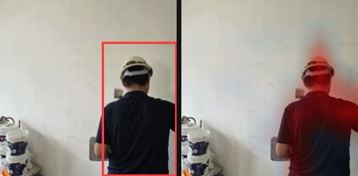
油漆批土 0.75 ／ 日報 油漆-批土塗裝test · 遮掉框後信心 0.34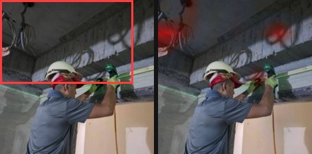
木作 0.56 ／ 日報 木作-天花封板test · 遮掉框後信心 0.37 → 改答 泥作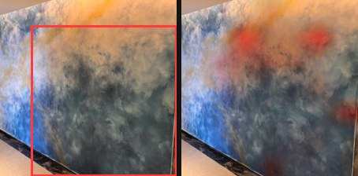
泥作 0.61 ／ 日報 油漆-批土塗裝test · 遮掉框後信心 0.74 · 與 Gemini 框 IoU 0.48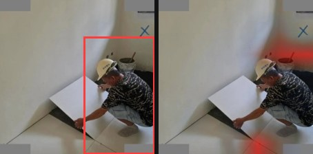
磁磚_地 0.63 ／ 日報 泥作-地磚貼飾test · 遮掉框後信心 0.29 → 改答 油漆批土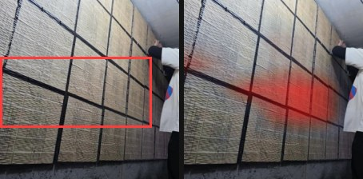
磁磚_牆 0.73 ／ 日報 泥作-壁磚貼飾test · 遮掉框後信心 0.56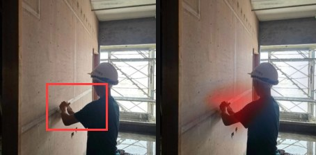
油漆批土 0.50 ／ 日報 輕隔間test · 遮掉框後信心 0.20 → 改答 輕隔間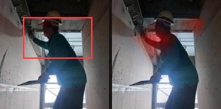
磁磚_牆 0.24 ／ 日報 泥作-打底粉光test · 遮掉框後信心 0.01 → 改答 泥作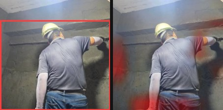
泥作 0.79 ／ 日報 泥作-打底粉光test · 遮掉框後信心 0.77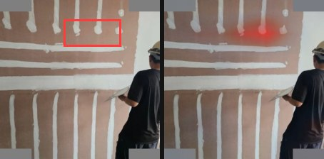
泥作 0.31 ／ 日報 輕隔間test · 遮掉框後信心 0.28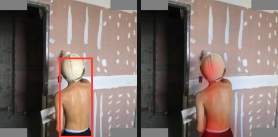
輕隔間 0.79test · 遮掉框後信心 0.29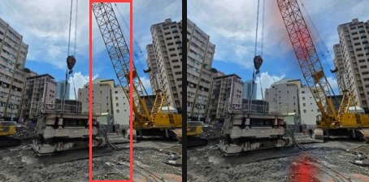
基礎 0.94 ／ 日報 基礎-連續壁test · 遮掉框後信心 0.87 · 與 Gemini 框 IoU 0.16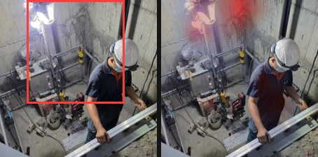
泥作 0.45 ／ 日報 設備-電梯停車test · 遮掉框後信心 0.15 → 改答 磁磚_地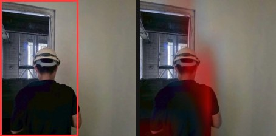
油漆批土 0.89 ／ 日報 油漆-批土塗裝test · 遮掉框後信心 0.12 → 改答 輕隔間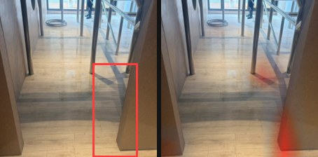
油漆批土 0.62 ／ 日報 雜項-清潔test · 遮掉框後信心 0.53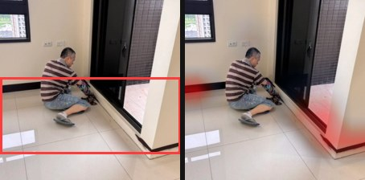
油漆批土 0.86 ／ 日報 油漆-批土塗裝test · 遮掉框後信心 0.44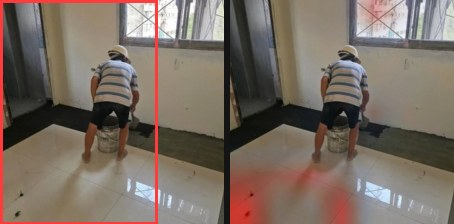
磁磚_地 0.52 ／ 日報 泥作-地磚貼飾test · 遮掉框後信心 0.10 → 改答 泥作 · 與 Gemini 框 IoU 0.07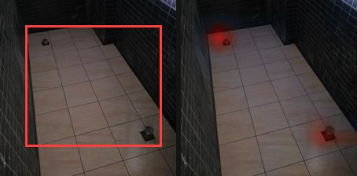
磁磚_地 0.88 ／ 日報 泥作-地磚貼飾test · 遮掉框後信心 0.43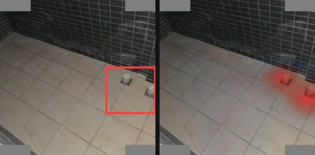
磁磚_地 0.84 ／ 日報 泥作-地磚貼飾test · 遮掉框後信心 0.77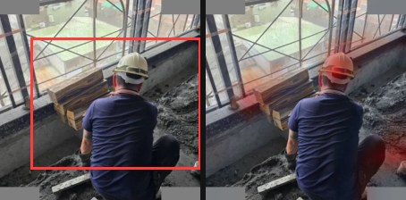
磁磚_地 0.34 ／ 日報 泥作-地磚貼飾test · 遮掉框後信心 0.10 → 改答 泥作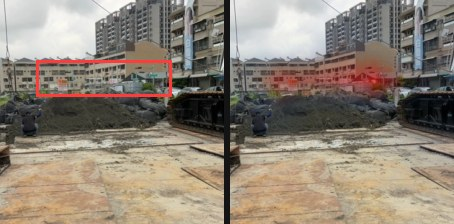
清潔 0.79 ／ 日報 雜項-清潔test · 遮掉框後信心 0.48 · 與 Gemini 框 IoU 0.00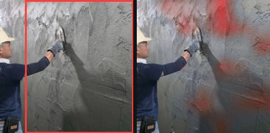
泥作 0.94 ／ 日報 泥作-打底粉光test · 遮掉框後信心 0.38 → 改答 油漆批土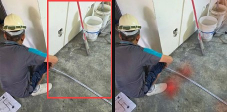
磁磚_地 0.54 ／ 日報 泥作-地磚貼飾test · 遮掉框後信心 0.35 · 與 Gemini 框 IoU 0.20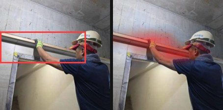
木作 0.69 ／ 日報 木作-天花封板test · 遮掉框後信心 0.21 → 改答 泥作防水 0.58 ／ 日報 防水-防水施作test · 遮掉框後信心 0.23 → 改答 泥作磁磚_地 0.69 ／ 日報 泥作-地磚貼飾test · 遮掉框後信心 0.44泥作 0.75 ／ 日報 泥作-打底粉光test · 遮掉框後信心 0.63油漆批土 0.71 ／ 日報 油漆-批土塗裝test · 遮掉框後信心 0.38 · 與 Gemini 框 IoU 0.57油漆批土 0.87 ／ 日報 油漆-批土塗裝test · 遮掉框後信心 0.87基礎 0.88 ／ 日報 基礎-連續壁test · 遮掉框後信心 0.73 · 與 Gemini 框 IoU 0.00防水 0.25 ／ 日報 油漆-批土塗裝test · 遮掉框後信心 0.06 → 改答 磁磚_地 · 與 Gemini 框 IoU 0.03泥作 0.69 ／ 日報 泥作-打底粉光test · 遮掉框後信心 0.62基礎 0.93 ／ 日報 基礎-連續壁test · 遮掉框後信心 0.43磁磚_牆 0.27 ／ 日報 油漆-批土塗裝test · 遮掉框後信心 0.05 → 改答 油漆批土 · 與 Gemini 框 IoU 0.05泥作 0.76 ／ 日報 泥作-打底粉光test · 遮掉框後信心 0.46景觀 0.89 ／ 日報 植栽-景觀test · 遮掉框後信心 0.89清潔 0.46 ／ 日報 雜項-清潔test · 遮掉框後信心 0.07 → 改答 油漆批土油漆批土 0.77 ／ 日報 油漆-批土塗裝test · 遮掉框後信心 0.62油漆批土 0.74 ／ 日報 設備-電梯停車test · 遮掉框後信心 0.78 · 與 Gemini 框 IoU 0.23磁磚_地 0.92 ／ 日報 泥作-地磚貼飾test · 遮掉框後信心 0.91防水 0.45 ／ 日報 泥作-打底粉光test · 遮掉框後信心 0.01 → 改答 泥作輕隔間 0.38 ／ 日報 防水-防水施作test · 遮掉框後信心 0.20 → 改答 防水泥作 0.94 ／ 日報 泥作-打底粉光test · 遮掉框後信心 0.92 · 與 Gemini 框 IoU 0.00泥作 0.36 ／ 日報 泥作-打底粉光test · 遮掉框後信心 0.32泥作 0.49 ／ 日報 泥作-打底粉光test · 遮掉框後信心 0.49 · 與 Gemini 框 IoU 0.14輕隔間 0.37 ／ 日報 防水-防水施作test · 遮掉框後信心 0.11 → 改答 泥作磁磚_地 0.46 ／ 日報 油漆-批土塗裝test · 遮掉框後信心 0.17 → 改答 泥作 · 與 Gemini 框 IoU 0.36泥作 0.46 ／ 日報 泥作-地磚貼飾test · 遮掉框後信心 0.33木作 0.82 ／ 日報 木作-天花封板test · 遮掉框後信心 0.23 → 改答 泥作泥作 0.79 ／ 日報 泥作-打底粉光test · 遮掉框後信心 0.67 · 與 Gemini 框 IoU 0.60木作 0.64 ／ 日報 木作-天花封板test · 遮掉框後信心 0.33泥作 0.86 ／ 日報 泥作-打底粉光test · 遮掉框後信心 0.78 · 與 Gemini 框 IoU 0.25油漆批土 0.77 ／ 日報 油漆-批土塗裝test · 遮掉框後信心 0.25 → 改答 泥作 · 與 Gemini 框 IoU 0.01泥作 0.66 ／ 日報 泥作-打底粉光test · 遮掉框後信心 0.70 · 與 Gemini 框 IoU 0.31泥作 0.68 ／ 日報 設備-電梯停車test · 遮掉框後信心 0.28油漆批土 0.41 ／ 日報 油漆-批土塗裝test · 遮掉框後信心 0.03 → 改答 清潔油漆批土 0.62 ／ 日報 泥作-壁磚貼飾test · 遮掉框後信心 0.43 · 與 Gemini 框 IoU 0.00油漆批土 0.73 ／ 日報 設備-電梯停車test · 遮掉框後信心 0.60 · 與 Gemini 框 IoU 0.12泥作 0.94 ／ 日報 泥作-打底粉光test · 遮掉框後信心 0.90磁磚_牆 0.40 ／ 日報 泥作-壁磚貼飾test · 遮掉框後信心 0.12 → 改答 木作磁磚_地 0.70 ／ 日報 泥作-地磚貼飾test · 遮掉框後信心 0.19 → 改答 泥作油漆批土 0.56 ／ 日報 油漆-批土塗裝test · 遮掉框後信心 0.37 → 改答 磁磚_地 · 與 Gemini 框 IoU 0.00磁磚_牆 0.90 ／ 日報 泥作-壁磚貼飾test · 遮掉框後信心 0.89油漆批土 0.92 ／ 日報 油漆-批土塗裝test · 遮掉框後信心 0.32 → 改答 磁磚_地 · 與 Gemini 框 IoU 0.00清潔 0.86 ／ 日報 雜項-清潔test · 遮掉框後信心 0.31 · 與 Gemini 框 IoU 0.04油漆批土 0.84 ／ 日報 油漆-批土塗裝test · 遮掉框後信心 0.77 · 與 Gemini 框 IoU 0.23磁磚_地 0.75 ／ 日報 泥作-地磚貼飾test · 遮掉框後信心 0.36景觀 0.81 ／ 日報 植栽-景觀test · 遮掉框後信心 0.75 · 與 Gemini 框 IoU 0.01油漆批土 0.77 ／ 日報 油漆-批土塗裝test · 遮掉框後信心 0.43木作 0.79 ／ 日報 木作-天花封板test · 遮掉框後信心 0.50 · 與 Gemini 框 IoU 0.45磁磚_牆 0.87 ／ 日報 泥作-壁磚貼飾test · 遮掉框後信心 0.16 → 改答 泥作基礎 0.90 ／ 日報 基礎-連續壁test · 遮掉框後信心 0.72磁磚_牆 0.68 ／ 日報 泥作-壁磚貼飾test · 遮掉框後信心 0.50磁磚_地 0.60 ／ 日報 泥作-地磚貼飾test · 遮掉框後信心 0.26 → 改答 油漆批土 · 與 Gemini 框 IoU 0.00木作 0.25 ／ 日報 設備-電梯停車test · 遮掉框後信心 0.20 → 改答 泥作 · 與 Gemini 框 IoU 0.00磁磚_地 0.70 ／ 日報 泥作-地磚貼飾test · 遮掉框後信心 0.27 → 改答 磁磚_牆油漆批土 0.47 ／ 日報 油漆-批土塗裝test · 遮掉框後信心 0.21 → 改答 輕隔間清潔 0.52 ／ 日報 雜項-清潔test · 遮掉框後信心 0.06 → 改答 景觀泥作 0.24 ／ 日報 油漆-批土塗裝test · 遮掉框後信心 0.22 → 改答 油漆批土 · 與 Gemini 框 IoU 0.15油漆批土 0.69 ／ 日報 油漆-批土塗裝test · 遮掉框後信心 0.56 油漆批土 0.60 ／ 日報 油漆-批土塗裝test · 遮掉框後信心 0.43泥作 0.30 ／ 日報 油漆-批土塗裝test · 遮掉框後信心 0.24 → 改答 油漆批土 · 與 Gemini 框 IoU 0.51磁磚_地 0.86 ／ 日報 泥作-地磚貼飾test · 遮掉框後信心 0.83木作 0.87 ／ 日報 木作-天花封板test · 遮掉框後信心 0.12 → 改答 油漆批土清潔 0.61 ／ 日報 雜項-清潔test · 遮掉框後信心 0.30 → 改答 景觀泥作 0.62 ／ 日報 泥作-打底粉光test · 遮掉框後信心 0.61木作 0.34 ／ 日報 油漆-批土塗裝test · 遮掉框後信心 0.09 → 改答 清潔磁磚_地 0.22 ／ 日報 植栽-景觀test · 遮掉框後信心 0.16 → 改答 油漆批土清潔 0.56 ／ 日報 油漆-批土塗裝test · 遮掉框後信心 0.02 → 改答 磁磚_地 · 與 Gemini 框 IoU 0.06油漆批土 0.60 ／ 日報 油漆-批土塗裝test · 遮掉框後信心 0.43泥作 0.37 ／ 日報 設備-電梯停車test · 遮掉框後信心 0.45 · 與 Gemini 框 IoU 0.13輕隔間 0.78test · 遮掉框後信心 0.68磁磚_地 0.88 ／ 日報 泥作-地磚貼飾test · 遮掉框後信心 0.84泥作 0.57 ／ 日報 油漆-批土塗裝test · 遮掉框後信心 0.57
油漆批土 0.60 ／ 日報 油漆-批土塗裝test · 遮掉框後信心 0.43泥作 0.30 ／ 日報 油漆-批土塗裝test · 遮掉框後信心 0.24 → 改答 油漆批土 · 與 Gemini 框 IoU 0.51磁磚_地 0.86 ／ 日報 泥作-地磚貼飾test · 遮掉框後信心 0.83木作 0.87 ／ 日報 木作-天花封板test · 遮掉框後信心 0.12 → 改答 油漆批土清潔 0.61 ／ 日報 雜項-清潔test · 遮掉框後信心 0.30 → 改答 景觀泥作 0.62 ／ 日報 泥作-打底粉光test · 遮掉框後信心 0.61木作 0.34 ／ 日報 油漆-批土塗裝test · 遮掉框後信心 0.09 → 改答 清潔磁磚_地 0.22 ／ 日報 植栽-景觀test · 遮掉框後信心 0.16 → 改答 油漆批土清潔 0.56 ／ 日報 油漆-批土塗裝test · 遮掉框後信心 0.02 → 改答 磁磚_地 · 與 Gemini 框 IoU 0.06油漆批土 0.60 ／ 日報 油漆-批土塗裝test · 遮掉框後信心 0.43泥作 0.37 ／ 日報 設備-電梯停車test · 遮掉框後信心 0.45 · 與 Gemini 框 IoU 0.13輕隔間 0.78test · 遮掉框後信心 0.68磁磚_地 0.88 ／ 日報 泥作-地磚貼飾test · 遮掉框後信心 0.84泥作 0.57 ／ 日報 油漆-批土塗裝test · 遮掉框後信心 0.57